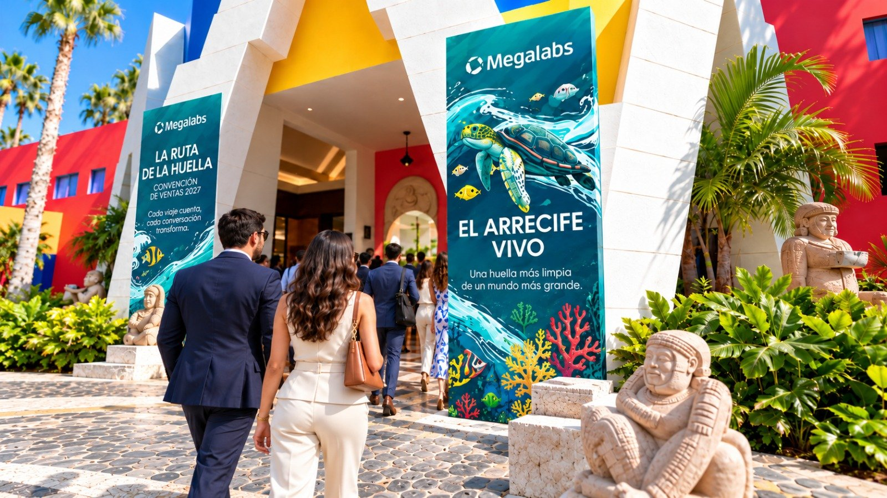
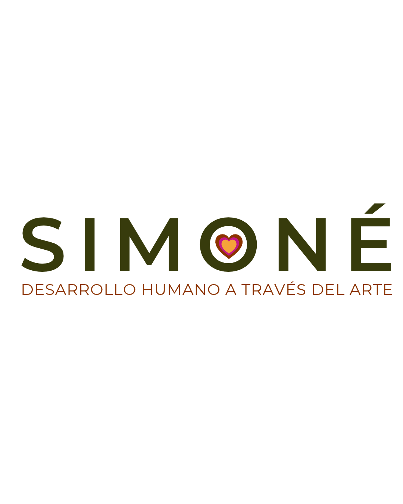
Propuesta de inversión · Convención de Ventas 2027
“Cada visita cuenta, cada conversación transforma. ¡Juntos dejamos huella!”
Preparado para Evoforma · Proyecto Megalabs
El proyecto
Cliente
Megalabs
Evento
Convención de Ventas 2027
Nombre del evento
La Ruta de la Huella
Slogan
“Cada visita cuenta, cada conversación transforma. ¡Juntos dejamos huella!”
Simoné · Desarrollo humano a través del arte — 02
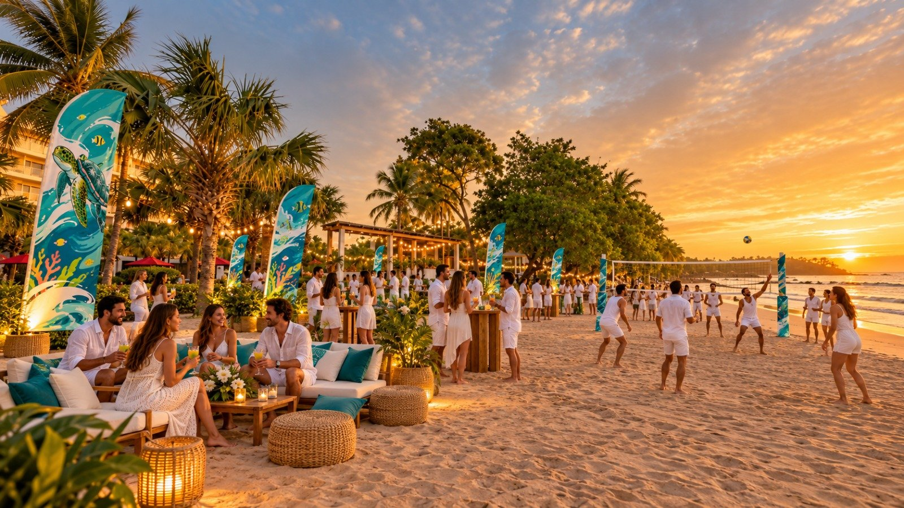
Objetivo general
Unificar la visión del negocio y movilizar a la fuerza comercial de primera línea y al equipo gerencial desde la estrategia abstracta hacia la ejecución concreta e impecable en el territorio.
Simoné · Desarrollo humano a través del arte — 03
Perfil y composición de los asistentes · Aforo total: 300 participantes
Para garantizar un diseño instruccional y experiencial efectivo, el evento reconoce la dualidad y riqueza del perfil de los asistentes.
85%
Composición: Visitadores Médicos, Dermoconsultores y Visitadores Clínicos.
Rol en la Convención: son los protagonistas de la ejecución diaria, quienes viven la interacción directa con médicos, puntos de venta, farmacias e instituciones de salud. Aportan el dinamismo, el conocimiento real del cliente y la agilidad para “hacer que las cosas pasen” en el territorio.
15%
Composición: directores y líderes de Gerencia General, Marketing, Promoción, Comercial, Médica, P&C (Personas & Cultura), Finanzas y Compliance.
Rol en la Convención: facilitadores del éxito comercial. Asisten para escuchar de primera mano la realidad del mercado, desmantelar cuellos de botella (“esponjas”) y entregar los insumos, aprobaciones y herramientas que la fuerza de ventas necesita para ganar.
Simoné · Desarrollo humano a través del arte — 04
La analogía natural
Frente a las costas de Salinitas yace el único arrecife rocoso-coralino de la región: Los Cóbanos. En este ecosistema convive la Tortuga Carey, una especie emblemática que protege la salud del arrecife al alimentarse de las esponjas que de otro modo sofocarían los corales.
A su vez, la estructura firme y corpulenta del arrecife le brinda a la tortuga refugio, alimento y un rompeolas natural contra las marejadas del Pacífico.
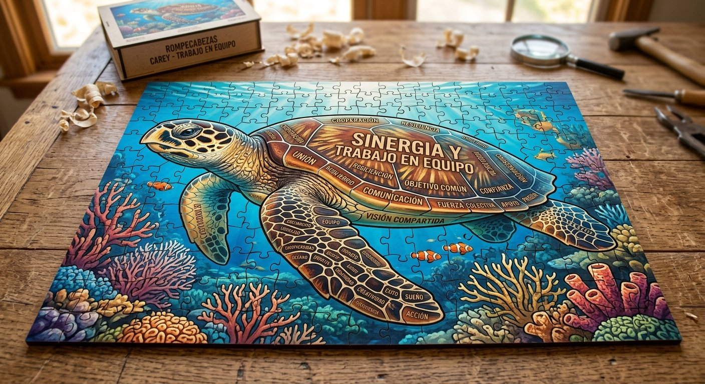
La tortuga
Quien despeja las “esponjas” para que el negocio respire y crezca.
El arrecife
La estructura que da refugio, recursos y respaldo a quien sale al territorio.
Simoné · Desarrollo humano a través del arte — 05
Material físico
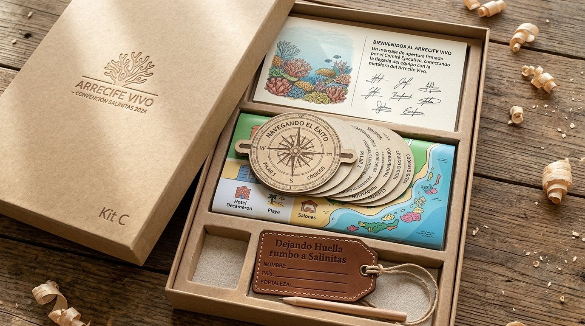
01
La primera impresión del viaje: se recibe, se abre y anticipa la ruta.
02
• Postal de Bienvenida
• Brújula de Papel Ajustable
• Mapa Ilustrado de Salinitas
• Etiqueta de Equipaje “Dejando Huella rumbo a Salinitas”
Bitácora de Campo Individual
Cuaderno táctico de trabajo, diario de reflexión y soporte físico de compromisos del participante. Formato ergonómico de pasta dura y diseño interior de 10 páginas estructuradas combinadas con hojas para anotaciones libres. Total: 25 páginas.
Simoné · Desarrollo humano a través del arte — 06
Materiales estaciones
150
impactos por estación
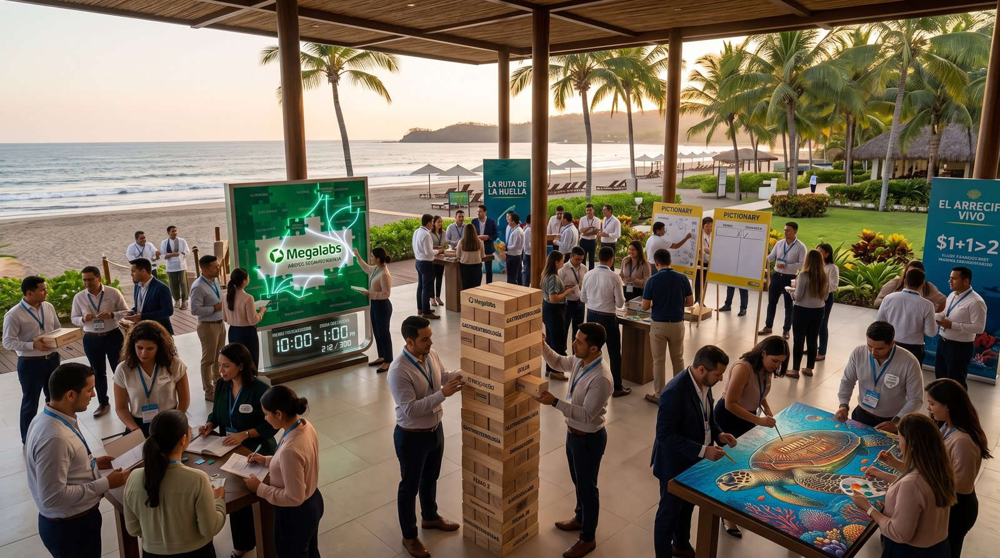
Incluye: recursos necesarios para lograr 150 impactos por estación, como pinturas, colores, marcadores, tableros de juego, superficies para pintar, pinceles, instrucciones de juego, cintas y otros requerimientos.
Estación 1
Tortuga Carey
Estación 2
Arquitectura de Portafolio
Estación 3
Perfil de Cliente PX/IE
Estación 4
Marcas y Lanzamientos 2027
Estación 5
Cadena de Ejecución en Campo
Estación 6
Simoné · Desarrollo humano a través del arte — 07
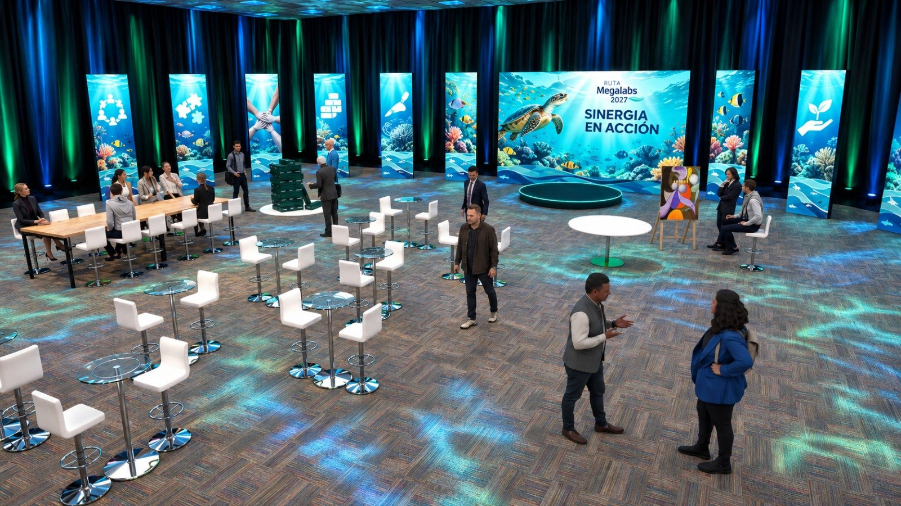
Materiales El Acuario
310
impactos
por estación
Recursos necesarios para lograr 310 impactos por estación, como pinturas, colores, marcadores, tableros de juego, superficies para pintar, pinceles, instrucciones de juego, cintas y otros requerimientos.
Simoné · Desarrollo humano a través del arte — 08
Material digital
01
“Sinergia Previa”
Plataforma: formulario móvil gamificado (vía WhatsApp institucional / QR), con entrega de resultados.
02
“El Circuito del Reconocimiento”
Plataforma digital de elección y cuotas (pre-evento).
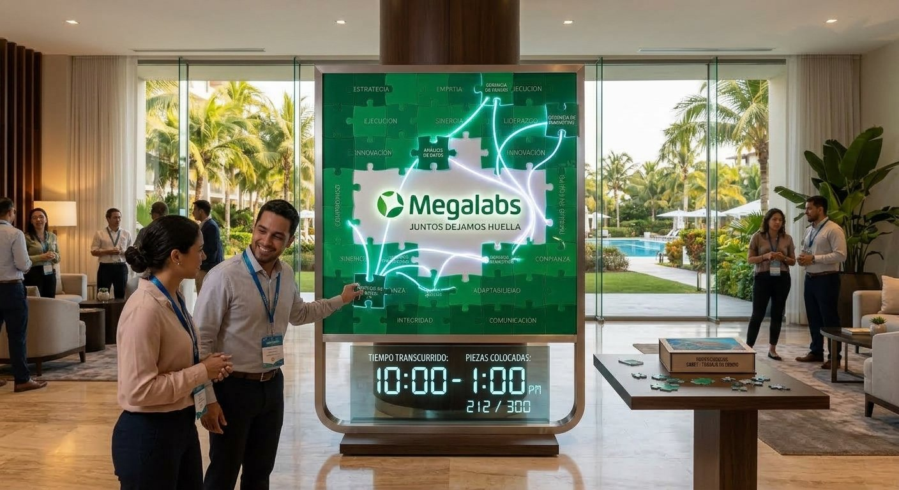
Simoné · Desarrollo humano a través del arte — 09
Equipo de la experiencia
7
Este presupuesto contempla 7 personas dedicadas a acompañar a los participantes durante toda la convención:
• Guían cada estación y El Acuario con instrucciones claras.
• Sostienen el ritmo para lograr los impactos previstos.
• Conectan cada dinámica con el mensaje del negocio.
• Cuidan la vivencia de cada asistente, de inicio a fin.
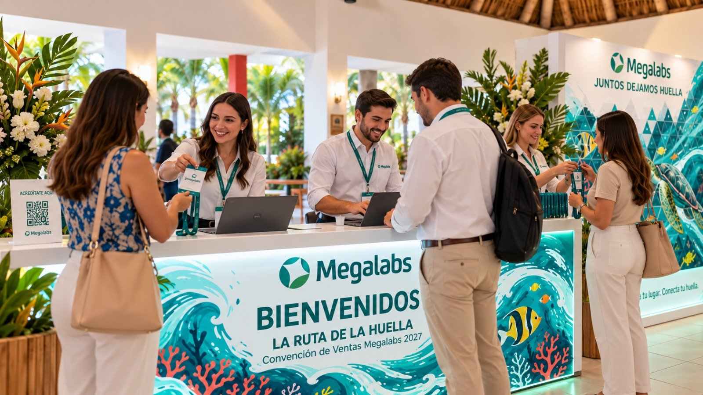
Simoné · Desarrollo humano a través del arte — 10
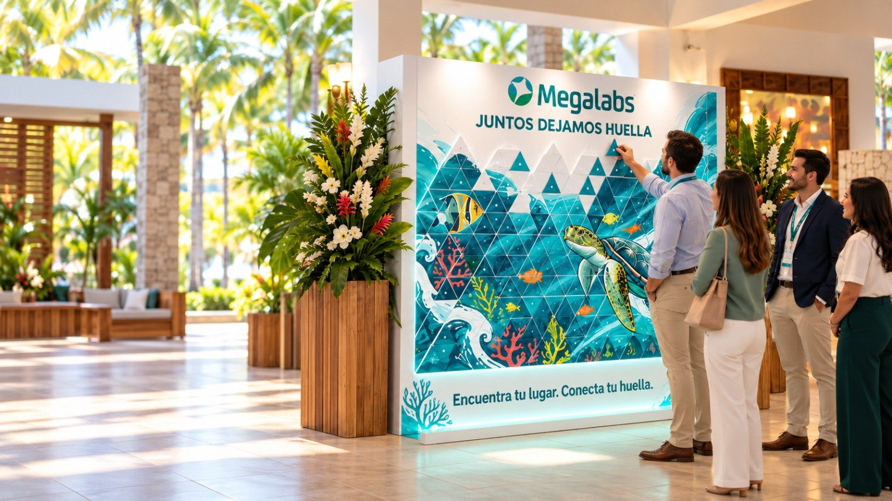
Beneficios del proyecto
Campo y gerencias alineados en la misma ruta y el mismo lenguaje.
Cada dinámica traduce el plan 2027 en conductas concretas para el territorio.
Los cuellos de botella se nombran y se trabajan con quienes pueden resolverlos.
El arte y el juego fijan los mensajes de portafolio, cliente y lanzamientos.
Insignias, votación cruzada y sellos celebran a quienes hacen que pase.
La Bitácora de Campo lleva los acuerdos de la convención al día a día.
Simoné · Desarrollo humano a través del arte — 11
Alcance de la inversión
| Componente | Detalle |
|---|---|
| Material físico | Empaque (caja exterior + tarjeta interior) y Kit de viaje “En Ruta” con Bitácora de Campo |
| Estaciones | Materiales para 6 estaciones · 150 impactos por estación |
| El Acuario | Materiales para 310 impactos por estación |
| Material digital | “Sinergia Previa” con entrega de resultados + “El Circuito del Reconocimiento” |
| Equipo | 7 personas como mediadores de la experiencia |
| Aforo | 300 participantes |
Simoné · Desarrollo humano a través del arte — 12
Inversión total
Forma de pago
Equivale a $21.437.100 + IVA. Saldo del 70%: $50.019.900 + IVA.
Beneficio
Aplica para pagos realizados dentro de los 20 días siguientes a emitida la factura.
Simoné · Desarrollo humano a través del arte — 13
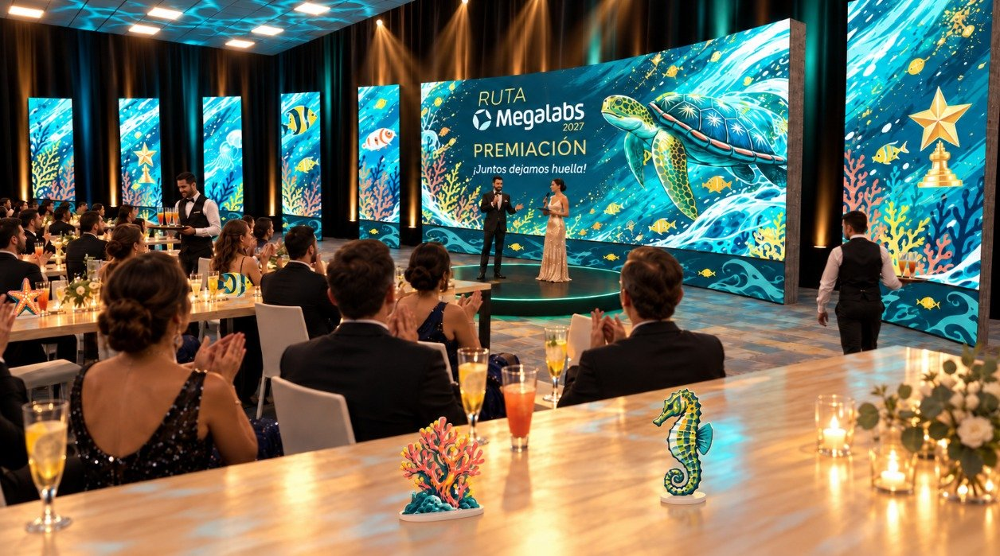
Gracias por la confianza, Evoforma.
Nathalia Velasco · Simoné
nathalia@experienciasimone.com
experienciasimone@gmail.com